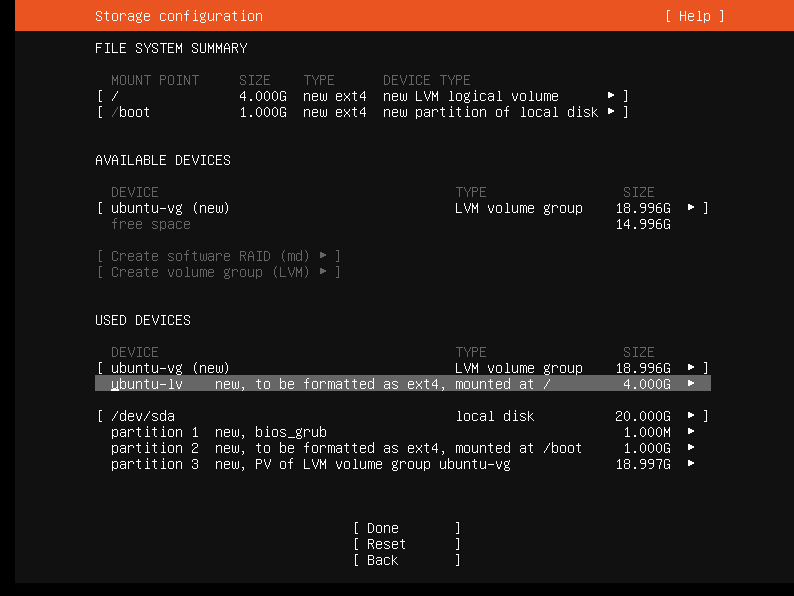

Ubuntu
记录了安装Ubuntu Server18.04 TLS版本的常用操作，仅供自己平时查看。
安装时
虚拟机安装时需要注意的地方：
配置静态IP
配置镜像
LVM设置
LVM是磁盘动态扩容技术。
但是，这样会有坑，如果你磁盘设置了20G，会因为LVM的原因，你只能使用4G，之后使用时你可以手动扩容到20G；具体参考。否则，需要这样设置才能全部使用到20G

ssh
安装时，最好勾选ssh，其余一律不安装。安装ssh为了方便。不想安装后手动安装
远程root登录
给root账户设置密码
1 | sudo passwd root |
切换root用户
1 | su |
修改ssh配置
加入内容PermitRootLogin yes
重启ssh服务
1 | service ssh restart |
这样就成功了
静态IP修改
如果安装时，没有设置静态IP，则这样修改(Ubuntu server 18.04 ，其他版本不通用)：
进入到目录：
1 | cd /etc/netplan/ |
修改目录中唯一的yaml文件(文件名是随机的)：
1 | vim xxx.yaml |
内容格式为：
1 | # This is the network config written by 'subiquity' |
应用配置文件
1 | netplan apply |
这样就可以了
防火墙
开启：ufw enable
状态：ufw status
关闭：ufw disable
修改主机名
在同一局域网中主机名不应该相同，所以我们需要做修改，下列操作步骤为修改 18.04 版本的 Hostname，如果是 16.04 或以下版本则直接修改 /etc/hostname 里的名称即可
查看当前Hostname
1 | root@ubuntu:/etc/netplan# hostnamectl |
修改 Hostname
1 | # 使用 hostnamectl 命令修改，其中 kubernetes-master 为新的主机名 |
修改 cloud.cfg
如果 cloud-init package 安装了，需要修改 cloud.cfg 文件。该软件包通常缺省安装用于处理 cloud
1 | # 如果有该文件 |
验证
1 | root@kubernetes-master:~# hostnamectl |